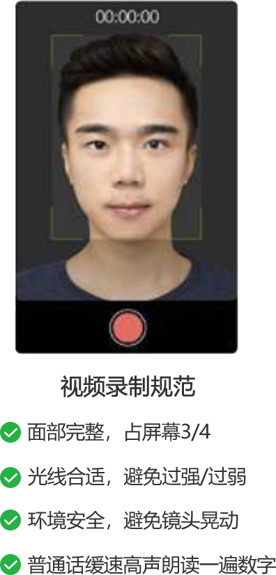

<ion-view view-title="实名认证" class="nav-title">
	<ion-nav-bar>
		<ion-nav-buttons side="left">
			<button class="button button-icon" ng-click="goback()">
				<i class="ion-ios-arrow-left nav-title" style="font-size: 30px;"></i>
			</button>
		</ion-nav-buttons>
	</ion-nav-bar>

	<ion-content style="background-color: white;">
		<div style="position: sticky;top: 0;width: 100%;height: 1px;background-color: #F2F2F2;;"></div>
		<div style="width: 100%;position: relative;display: flex;flex-direction: column;align-items: center;justify-content: center;margin-top: 20px;">
			
			<button ng-click="next()" class="button button-block button-positive" style="width: 90%;margin-top: 40px;">下一步</button>
		</div>
	</ion-content>
</ion-view>